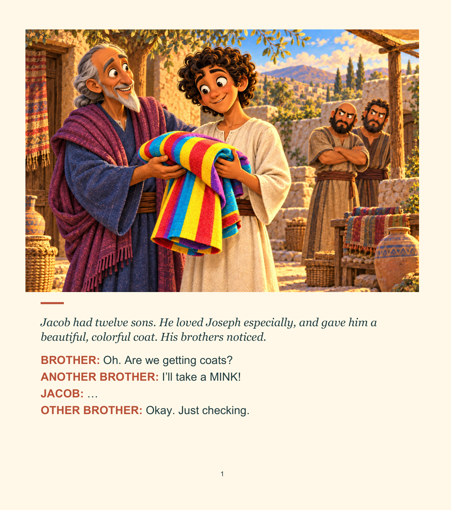

Illustrated paperback · ages 8–12
Nice Coat, Joseph
A playful, full-color retelling of Joseph's story, inspired by Genesis and written by Rainey Gonzalez.
A colorful coat stirs up family tension. Joseph's journey takes him from home to Egypt and, eventually, toward forgiveness, second chances, and hope. The jokes and character dialogue are invented for this story; they are not quotations from the Bible.
See the exact paperback on Amazon ↗Paperback ISBN-13: 979-8175363747 · 48 pages. Amazon shows current price and availability.

An illustrated family story with a wink
The book follows Joseph through jealousy, setbacks, responsibility in Egypt, and a surprising family reunion. It is a standalone title in the And Then Things Got Biblical series.